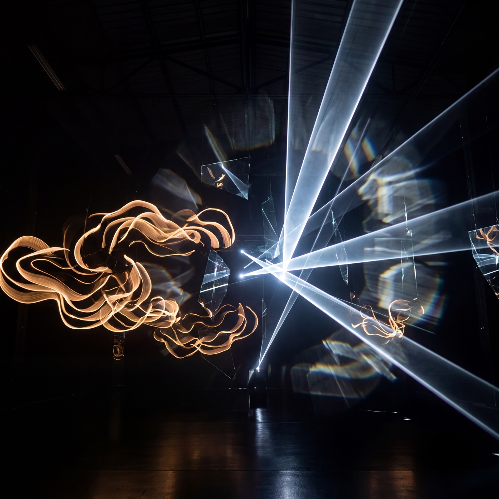

JFI · Austin, Texas · Electronic Press Kit
New single · September 25, 2026
Warrior
Outside
Alternative electronic / art-pop / dance-rock
- Artist
- JFI (“J-F-I”)
- Label
- Self-released
- For listeners of
- Goldfrapp, LCD Soundsystem, Underworld
- FCC status
- Clean · no explicit content
- Focus track
- “Warrior Outside”

Release notes
Armor finds its way home.
“Warrior Outside” explores the layers inside a protector: warrior in the outside world, advocate within, and lover at home.
Its language of hunting, killing, and bringing something home is archetypal—a reflection on what we confront in the world to provide safety and tenderness for the people we love.
The final destination of all that armor is forgiveness.
Artist bio
J is the voice.
Fi is the signal.
JFI is an Austin-based electronic artist blending art-pop, dance-rock, and experimental electronic production into what he calls Vapor Wave Positivity.
Performing with two turntables and a microphone, JFI creates music designed to move the body while encouraging authenticity, creativity, and self-exploration.
JFI’s debut album, Dead Lover’s Kill, brings together 15 original compositions created with producers and beat-makers including Davey Badiuk, Rex Chroma, Bedlake, KYON, Denis, Hybridas, Eternity Bro, Dirty Freqs, Harrison Amer, Emmett Cooke, Vicate Studios, Arenas, and Noizlab. The album was recorded at Moon Dial in Austin and mixed by Davey Badiuk at Killingsworth Studios in Los Angeles.
“Divine transmissions from the 5D realm, decoded into music.”
Live at Moon Dial
Perfect
Selected highlights
Austin-built.
Dimensionally tuned.
- 15 original compositions on the debut full-length Dead Lover’s Kill
- Recorded at Moon Dial in Austin, Texas
- Mixed by Davey Badiuk at Killingsworth Studios in Los Angeles
- Austin performances at Sahara Lounge and Moon Dial
Downloads
Press assets
Full-resolution files for broadcast, editorial, and promotional use.
{kind=link}
{kind=link}
Radio · Press · Booking